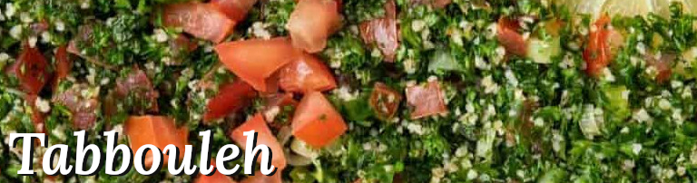

Odin's Recipes
Tabbouleh

Description
Ingredients
- ⅓ cup extra-virgin olive oil
- 3 tablespoons fresh lemon juice
- 1 garlic clove, grated
- ½ teaspoon sea salt
- ¼ teaspoon ground coriander
- 1 pinch cinnamon
- 3 cups finely chopped curly parsley
- 1 cup diced English cucumber
- 1 cup cored and diced tomato
- ⅔ cup cooked bulgur wheat
- ⅓ cup finely chopped fresh mint
- 2 scallions, chopped
Cooking Steps
- In a large bowl, whisk together the olive oil, lemon juice, garlic, salt, coriander, and cinnamon. Add the parsley, cucumber, tomato, bulgur, mint, and scallions and toss to combine.
- Season to taste and chill until ready to serve.